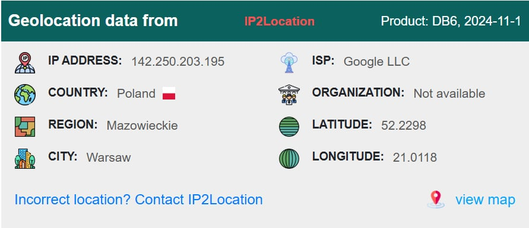
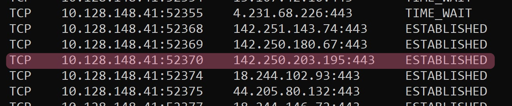
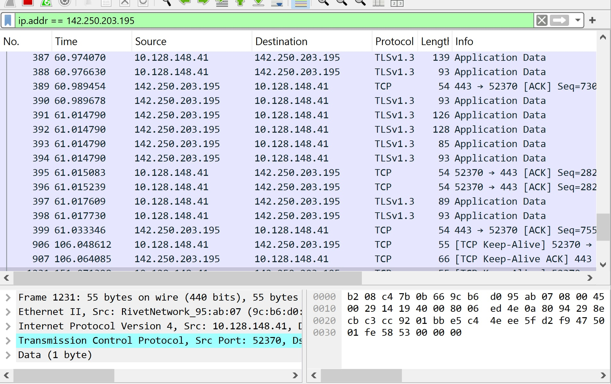
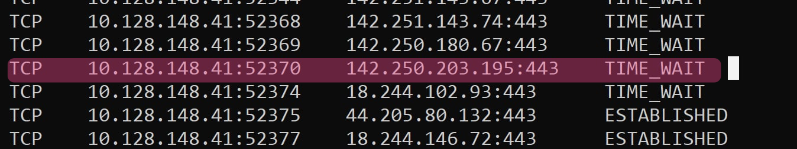
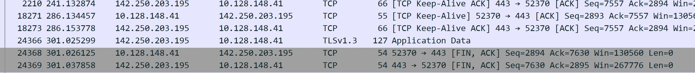
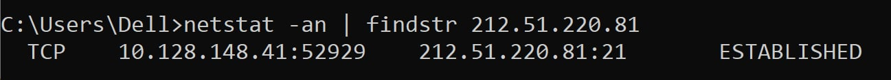
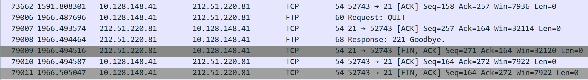
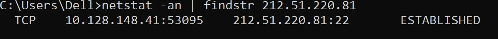
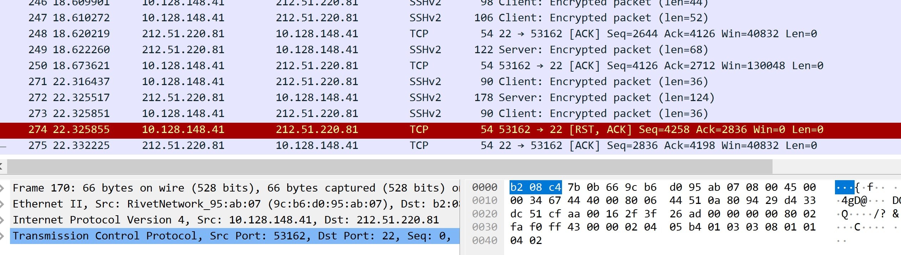
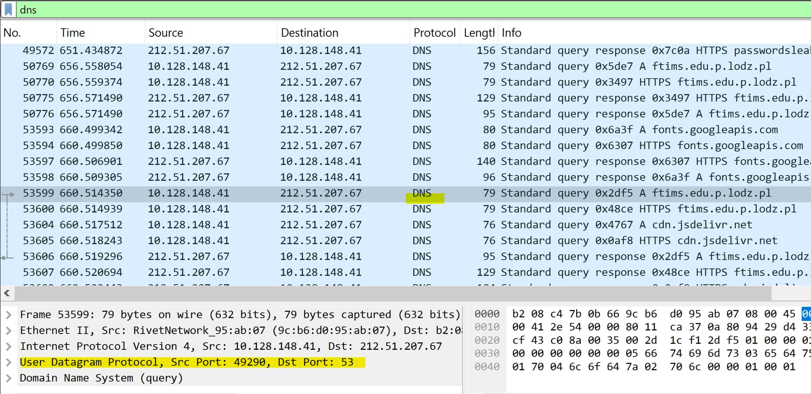

Theoretical part
TCP Protocol
TCP (Transmission Control Protocol) is one of the most widely used protocols in networking. It is a connection-oriented protocol,
meaning it establishes a dedicated connection between devices before transmitting data.
TCP guarantees the reliable delivery of data by using acknowledgments, retransmissions, and error checking.
Key features of TCP:
- Reliable Data Transfer: TCP ensures that all data is delivered correctly and in order.
- Flow Control: Manages the rate of data transmission to prevent overwhelming the receiver.
- Congestion Control: Reduces transmission rates during network congestion to ensure fair resource usage.
- Applications: Used for web browsing, email, file transfers, and database communication.
UDP Protocol
UDP (User Datagram Protocol) is a simpler, connectionless protocol designed for fast and lightweight communication.
Unlike TCP, it does not establish a connection before data transmission, nor does it guarantee the delivery or correctness of data.
Key features of UDP:
- Speed over Reliability: Data is sent without waiting for acknowledgment.
- Low Overhead: Fewer checks and controls compared to TCP, making it efficient for real-time applications.
- Applications: Ideal for live video/audio streaming, online gaming, and DNS queries.
TCP Protocol Parameters
- Sequence Number: Tracks the order of packets to reassemble data correctly.
- Acknowledgment Number: Confirms the receipt of packets by the recipient.
- Window Size: Determines how much data can be sent before requiring acknowledgment.
- Checksum: Ensures the integrity of transmitted data by verifying the content.
- Flags: Control bits in the TCP header (e.g., SYN, ACK, FIN) to manage connection state.
UDP Protocol Parameters
- Source Port: Identifies the application or process that sent the data.
- Destination Port: Identifies the application or process on the receiving device.
- Length: Specifies the size of the UDP datagram.
- Checksum: Provides basic error detection to verify data integrity.
TCP Connection
TCP connections are essential for ensuring reliable communication between devices.
A connection is established and maintained throughout the data exchange process to track packets and ensure accurate delivery.
Three-Way Handshake
The three-way handshake is the method TCP uses to establish a connection between a client and a server. It involves three steps:
- Step 1 - SYN: The client sends a SYN (synchronize) message to initiate a connection.
- Step 2 - SYN-ACK: The server responds with a SYN-ACK (synchronize-acknowledge) message to confirm and initiate its side of the connection.
- Step 3 - ACK: The client sends an ACK (acknowledge) message to confirm the connection is established.
This process ensures both devices are ready for communication and agree on initial sequence numbers.
Connection Establishment
The process of connection establishment ensures that both the sender and receiver are prepared to communicate.
During this phase, the devices exchange information such as sequence numbers and agree on parameters for the session.
Connection Release
TCP uses a graceful shutdown mechanism to release connections. This process ensures all data is delivered before termination.
The steps include:
- The initiating device sends a FIN packet to signal the end of transmission.
- The receiving device acknowledges the FIN and sends its own FIN when ready to close.
- The initiating device acknowledges the FIN, completing the process.
This ensures that all data has been transmitted and both sides agree to terminate the connection.
Ports
Ports are numerical identifiers that allow multiple applications to use a single network connection.
Each service is assigned a unique port number, enabling the operating system to route data to the correct application.
Examples of common port numbers:
- 80: HTTP (web browsing)
- 443: HTTPS (secure web browsing)
- 21: FTP (file transfer)
- 25: SMTP (email sending)
- 53: DNS (domain name resolution)
Practical part
2.1.
Enter www.google.com webpage using preferred browser. Use netstat and Wireshark to identify ports which are used for data transmission (local and remote port numbers). Finish the connection (close the browser) and check local port status.





2.2.
Copy the file from your local host to studife.it.p.lodz.pl server using ftp protocol. Use netstat and Wireshark to identify ports which are used for data transmission (local and remote port numbers). Finish the connection and check local port status.



2.3.
Copy the file from your local host to studife.it.p.lodz.pl server using scp or sftp protocol. Use netstat and Wireshark to identify ports which are used for data transmission (local and remote port numbers). Finish the connection and check local port status.


2.4.
Use Wireshark to check which protocol and port is used in transport layer by DNS protocol.
